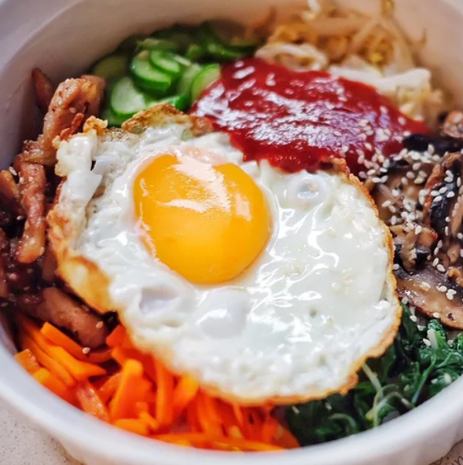

~Korean Cuisine~
Bibimbap(Korean Rice With Mixed Vegetables)

Prep time: 30 Minutes
Cook: 30 Minutes
Total Servings: 4 servings
Per serving: 569 calories; protein 34.9g; carbohydrates 63g;
fat 19.3g; cholesterol 242.9mg; sodium 573.9mg
See
Inspiration
Ingredients:
1 English cucumber, cut into matchsticks
¼ cup gochujang (Korean hot pepper paste) (Optional)
1 bunch fresh spinach, cut into thin strips
1 tablespoon soy sauce
1 teaspoon olive oil
2 carrots, cut into matchsticks
1 clove garlic, minced
1 pinch red pepper flakes
1 pound thinly-sliced beef top round steak
1 teaspoon olive oil
4 large eggs
4 cups cooked white rice
4 teaspoons toasted sesame oil, divided
1 teaspoon sesame seeds
2 teaspoons gochujang (Korean hot pepper paste), divided (Optional)
Procedure:
- Step 1: Stir cucumber pieces with 1/4 cup gochujang paste in a bowl; set aside.
- Step 2: Bring about 2 cups of water to a boil in a large nonstick skillet
and stir
in spinach; cook until spinach is bright green and wilted, 2 to 3 minutes. Drain
spinach and squeeze out as much moisture as possible; set spinach aside in a bowl
and stir soy sauce into spinach.
- Step 3: Heat 1 teaspoon olive oil in large nonstick skillet and cook
and stir
carrots until softened, about 3 minutes; stir in garlic and cook just
until fragrant,
about 1 more minute. Stir in cucumber pieces with gochujang paste; sprinkle
with red
pepper flakes, and set the mixture aside in a bowl.
- Step 4: Brown beef in a clean nonstick skillet over medium heat,
about 5 minutes per side, and set aside. In a separate nonstick skillet,
heat 1 more teaspoon olive oil over medium-low heat and fry the eggs
just on one side until yolks are runny but whites are firm, 2 to 4 minutes each.
- Step 5: To assemble the dish, divide cooked rice into 4 large serving bowls;
top with spinach mixture, a few pieces of beef, and cucumber mixture. Place 1 egg
atop each serving. Drizzle each bowl with 1 teaspoon of sesame oil, a sprinkle of sesame seeds,
and a small amount of gochujang paste if desired.